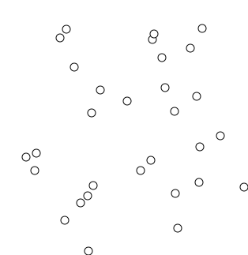

Kruskal’s Algorithm
«Алгоритм Краскала» — это алгоритм построения «минимального остовного дерева» «взвешенного
неориентированного графа».
Video Explanation
В следующем видео будет представлен алгоритм Краскала и показано, как его можно применить для построения
«минимального остовного дерева» «взвешенного неориентированного графа».
Video: Kruskal's Algorithm_1080p
Visual Example

На приведенной выше анимации показано, как алгоритм Краскала увеличивает минимальное остовное дерево путем
добавления ребер. В этом примере расстояние между двумя вершинами является весом ребра. Мы пытаемся
добавлять каждое ребро по одному, от ребра с наименьшим весом до ребра с наибольшим весом. Если какая-либо
из вершин ребер еще не является частью MST, то ребро добавляется в MST.
Почему алгоритм Краскала выбирает только N-1 ребер?
В следующем видео мы докажем, что нужно выбирать именно
N−1 ребер графа с
Всего N вершин, чтобы построить «минимальное остовное дерево» этого графа.
Video: Why does Kruskal's Algo only choose N-1 edges_1080p
Обратите внимание, что в видео выше все графики представляют собой связанные списки. Однако «минимальное
связующее дерево» не обязательно должно быть только связным списком. Другими словами, мы можем сформировать
MST без формирования связанного списка. В любом случае нужны только N-1 ребер.
Почему мы можем применять «жадную стратегию»?
В следующем видео вы увидите, почему жадный подход работает при выполнении нашей задачи.
Video: Proof of Kruskal's Algo v2_1080p
Анализ сложности
-
Временная сложность:
О(Е⋅logE). Здесь,
E представляет количество ребер.
- Сначала нам нужно отсортировать все ребра графа в порядке возрастания. Сортировка займет
Время O(ElogE).
- Далее мы можем начать строить минимальное связующее дерево, выбирая, какие ребра следует
включить. Для каждого ребра мы проверим, принадлежат ли обе вершины ребра одному и тому же
компоненту связности; который является
O(α(V)) операция, где
α относится к обратной функции Аккермана. В худшем случае дерево не будет полным, пока мы не
достигнем самого последнего ребра (ребра с наибольшим весом), поэтому этот процесс займет
Время O(Eα(V)).
- Таким образом, суммарная временная сложность равна
O(ElogE+Eα(V))=O(ElogE)
- Пространственная сложность:
О(В).
V представляет количество вершин. Для отслеживания корня каждой вершины в структуре данных
объединения-поиска требуется
O(V) пространство. Однако, в зависимости от используемого алгоритма сортировки, для сортировки списка
ребер на месте потребуется разное количество вспомогательного пространства. Например, Timsort
(используется по умолчанию в Python) требует
O(E) в худшем случае, в то время как Java использует вариант быстрой сортировки, пространственная
сложность которого равна
О(логЕ).